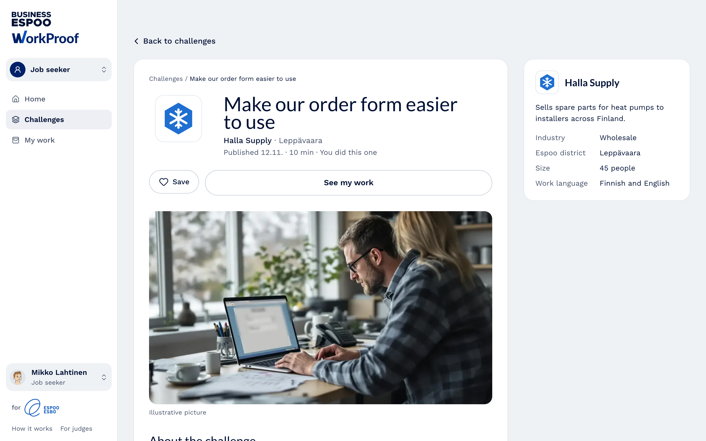
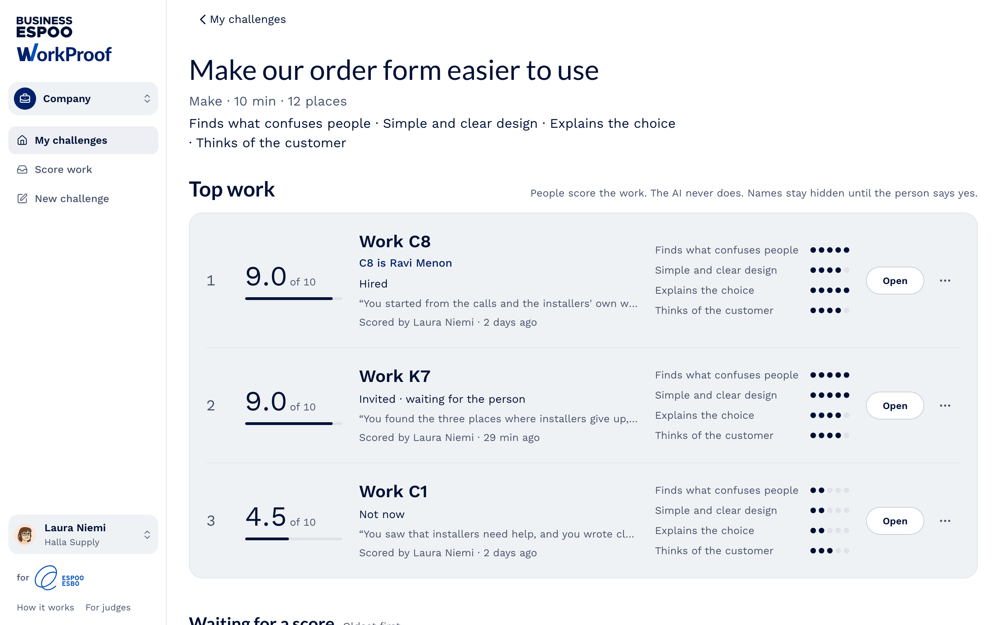
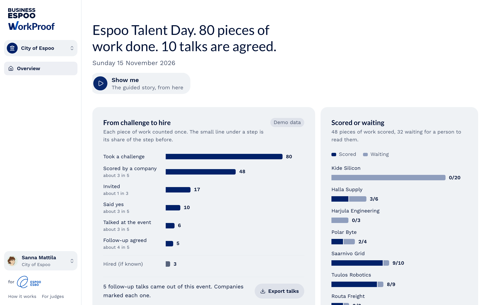

Junction 2026 · City of Espoo · Rethinking Recruitment
WorkProof: the brief and the build
WorkProof is for City of Espoo talent events. Companies see real work and score it; the AI never scores. A professional does a short real task from an Espoo company. A named person at the company scores the work from 1 to 5 on each of the task's skills, writes a reason, and chooses Meet or Not now. As a safeguard, the name stays hidden until the professional accepts. Tested: 0 of 79 planted identity details reached a reviewer.
Live demo: workproof.wicflow.comCode: github.com/felixwickholm/workproofThis brief as PDF: workproof.wicflow.com/brief.pdf
One-page summary
What it is. Do a real challenge. A person at the company scores your work; the AI never scores. WorkProof turns a recruitment event into short real work: a company posts a challenge, a person does it, and a named person at the company reads the work without the name.
For whom. Professionals looking for work (Job seeker view); Companies hiring at the event (Company view); City of Espoo event organisers (City of Espoo view).
How each judging criterion is met
- Impact & Relevance (45%). Companies register with a short real challenge in one of four formats (Choose, Make, Fix, Read). Evidence: Flow eval: every step from task to a meeting both sides confirmed passes (evals/flow.eval.ts).
- Innovation & User Experience (35%). A short real task to score. Evidence: Story eval: every story stage rebuilds the visitor's own demo event (evals/story.eval.ts); end-to-end run on a 390x844 screen (evals/e2e).
- Responsible & Feasible Execution (20%). AI never scores or ranks people: a guard checks every AI output. Evidence: Guard: 70 of 70 planted judging phrases rejected; 575 of 575 text fields of drafted tasks and follow-up questions pass; blind layer: 0 of 79 planted identity strings reach a reviewer; 0 automated decisions.
Key facts
- Name
- WorkProof
- Challenge
- "Rethinking Recruitment" by the City of Espoo, Junction 2026 (13 to 15 November 2026)
- Views
- Job seeker, Company, City of Espoo, in one app
- AI role
- Drafts a task from a company's one-sentence need, with 3 to 5 core skills. Writes two follow-up questions about the person's own choices in their answer. A person approves every company task.
- AI never
- Scores, ranks, rates or recommends a person. Receives a person's name or contact field. Decides Meet or Not now. Analyses a voice or a face.
- Who decides
- A named reviewer gives 1 to 5 points per core skill and writes a reason. The name of the person stays hidden until they accept.
- Evidence
- 2057 of 2057 unit tests and 64 of 64 eval tests pass (checked 2026-11-15). 0 of 79 planted identity details reached a reviewer. 70 of 70 planted judging phrases rejected. 0 automated decisions.
- Demo data
- 28 companies, 40 challenges, 80 pieces of work. All synthetic. No sign-in, no keys.
- Links
- https://workproof.wicflow.com · https://github.com/felixwickholm/workproof · https://workproof.wicflow.com/for-judges
The brief
The City of Espoo runs recruitment and matchmaking events for companies and international talent. CVs and messages are now written and read with AI, so companies get more noise and less signal. The brief asks how the events can help companies and talent find each other on real grounds, with less noise from registration to the event, and without automated profiling or automated decisions about people.
How can recruitment and matchmaking events organized by City of Espoo help companies and talent relevantly find and connect with each other, despite AI-generated job search materials and AI-assisted recruitment processes are becoming common?
…solutions that help create stronger signal and less noise throughout the process of registering and attending an event…
…automated profiling or automated decision-making about individuals without human involvement should not be a part of the solution.
The solution
WorkProof replaces the CV with a short piece of real work. A company describes its need in one sentence or pastes a job-ad link. The AI drafts a challenge with 3 to 5 core skills, and a person at the company approves it. A professional does the challenge in 8 to 30 minutes and answers two follow-up questions about their own choices. Rules remove known personal details before anyone reads the work.
A named reviewer at the company reads the work, gives 1 to 5 points on each core skill, writes a reason and chooses Meet or Not now. The person sees the scores and the words. The company sees the name only after the person accepts. The city sees every step from challenge taken to hire, and the work still waiting.
The demo story follows one loop: Mikko Lahtinen, a designer, does Halla Supply's challenge "Make our order form easier to use". Laura Niemi at Halla Supply scores it and invites him. Mikko accepts, and only then does Halla Supply see his name.
How it is built
One Next.js app. Pages and the JSON API call the service rules. The rules pass work through the blind layer before anyone reads it (rules remove known personal details; some can remain), check every AI output with the guard, and keep each visitor's demo copy in memory.
What City of Espoo staff told us
On 13 November we asked City of Espoo staff if companies could judge people on a short work task. They had thought of something similar "on a smaller scale" and named three risks. Our answers:
- A company hires only a few. With consent, one proof can reach a second employer with the same core skills (Second look), after 48 hours without an answer or after a Not now.
- Friction must stay low. No login and no account. The demo challenges take 8 to 30 minutes. The stated length is capped at 30.
- AI can do the task. AI is allowed. Two follow-up questions ask about the person's own choices, and the meeting starts from the work.
The three views
Job seeker view, for professionals looking for work
Pick a challenge from an Espoo company, do it in 8 to 30 minutes and write how they think, see what the company will read, answer two follow-up questions, then accept or decline an invitation. A declined company never sees the name. Open it: workproof.wicflow.com.

Company view, for companies hiring at the event
Paste a job-ad link or say the need in one sentence, approve a challenge with 3 to 5 core skills and a number of places, read the work without names in arrival order, score each core skill from 1 to 5 with a written reason, and invite the people to meet. Open it: workproof.wicflow.com/employer.

City of Espoo view, for City of Espoo event organisers
See outcomes, not sign-ups: challenges taken, scored, invited, talked, follow-ups agreed and hires. Make a challenge for a company from its job ad, draft a reminder to a company with work waiting, and export the list of talks. Slots and labels, never names. Open it: workproof.wicflow.com/city.

The AI and its limits
What the AI does
- Drafts a task from a company's one-sentence need, with 3 to 5 core skills. A person approves every company task. Practice tasks are generated without approval and go to no company.
- Writes two follow-up questions about the person's own choices in their answer.
- Every AI output passes the no-judgement guard; on any failure the scripted designer is used.
What the AI never does
- Scores, ranks, rates or recommends a person.
- Receives a person's name or contact field. Text is redacted by the same rules before it reaches a model. The built-in designer runs without any model. Rules can miss some details in free text.
- Decides Meet or Not now. WorkProof has no automated decision feature; a decision carries a registered reviewer's name and written feedback.
- Analyses a voice or a face. Voice answers are planned, not live; when they come, WorkProof will store only the text.
Responsible AI
EU AI Act. Regulation (EU) 2024/1689 lists AI systems for the recruitment or selection of people as high-risk (Annex III, point 4). That covers systems that filter applications or evaluate candidates. So WorkProof keeps AI out of scoring, ranking and deciding. The AI drafts a task and asks two questions. A named person reads the work, scores it and decides, with a written reason. The duties that match high-risk systems are built anyway: human oversight (Article 14), logs (Article 12) and telling people where AI was involved.
GDPR Article 22. A person has the right not to be subject to a decision based solely on automated processing. WorkProof has no automated decision feature. Every Meet or Not now carries the name of a reviewer registered for the company and a written reason. The city view counts decisions without a registered name: 0.
Privacy. Review is blind: rules remove known personal details before a reviewer or a model reads the work. The name stays hidden until the person accepts. All data in the demo is synthetic, and the demo has no sign-in.
- No account. The person's private key is kept in their own browser.
- Reviewers and AI models read work only after the blind layer: known personal details are removed by rules, and some can remain. Responses to companies and the city carry no talent id.
- Accepting shows the name and contact to that company only. The organiser sees slots and labels, never names.
- Second look is off until the person turns it on, and can be withdrawn.
- Answers are typed; voice is planned and would be stored as text only. Pictures are re-encoded in the browser and the server refuses a JPEG that still carries EXIF data.
- Each visitor's demo copy lives in memory and is dropped after 12 hours.
Every person, company, task, proof and decision in the demo is invented, including Mikko Lahtinen and the 28 employers of "Espoo Talent Day". Email addresses use example.org and phone numbers are placeholders. Any likeness to a real person or company is accidental. The seed is in src/lib/seed.
This is a design position, not legal advice. A pilot needs its own legal review, a data protection impact assessment, sign-in and retention rules. Full text: docs/responsible-ai.md in the repository.
Limits, said plainly
- Company and city actions have no sign-in. Any caller can act as any company or as the city in the demo; a pilot needs sign-in and ownership checks.
- Pictures are not analysed. The person confirms that the picture shows only the work, and a reviewer can report one; a reported picture is removed for every reader. Nothing checks what a picture shows automatically.
- AI-written work is not solved. Our untested assumption: follow-up answers about a person's own choices, and a meeting that starts from the work, make AI-only answers easy to notice. This is not measured yet. The product cannot prove who typed an answer.
- Impact is not measured yet. Every outcome in the demo is invented data; the first real test is a pilot event.
- Reviewing takes employer time. A task takes 5 to 30 answers, but reading still takes a person's time.
- Nothing forces an employer to answer. Every recorded decision needs a written reason, and unanswered work stays visible to the city.
- The blind layer is rules, not a guarantee. It misses a lowercase name with no cue word, a bare name with no introduction, another person's name, another spelling of the author's name, and part of an employer name that is not on the list. It over-hides a one-word capitalised sign-off and a capitalised value after "name:" outside a code block.
Evidence
All numbers come from real runs of the project's own checks, last on 2026-11-15. npm test: 2057 of 2057 unit tests pass in 142 files. npm run eval: 64 of 64 eval tests pass in 7 files.
| Suite | What is checked | Result |
|---|---|---|
| Task generator | Drafts with a title, a brief, 3 to 5 core skills, minutes and a review guide | 20 of 20 drafts in shape |
| Task generator | Planted biased wishes set aside (age, native speaker, top university) | 3 of 3 baited drafts set it aside |
| Task generator | Planted identity strings in published task cards | 0 planted strings found in 47 published cards from 47 needs |
| Blind review | Planted identity strings that reached the reviewer payload | 0 of 79 planted strings found |
| Blind review | Identity forms hidden, first case set | 54 of 54 cases fully hidden |
| Blind review | Identity forms hidden, second case set | 69 of 72 cases fully hidden, 3 known limits |
| No automated decisions | Planted judging phrases rejected by the guard | 70 of 70 judging phrases rejected |
| No automated decisions | Neutral task phrases let through by the guard | 33 of 33 neutral phrases passed |
| No automated decisions | Text fields of drafted tasks and follow-up questions that pass the guard | 575 of 575 text fields from 32 designer outputs (20 drafts, 12 follow-up sets) |
| No automated decisions | HTTP status of 2 decisions sent without a reviewer or feedback; stored decisions with a named reviewer | refused: HTTP 400 for a decision without a name, HTTP 400 without feedback; 48 stored decisions all named |
| No automated decisions | Automated decisions in the city totals and the audit log | 0 automated decisions; 0 decision audit lines by a non-human |
| No automated decisions | Decisions signed by software or by a name the company has not registered | refused: HTTP 400 for "AI bot", HTTP 403 for an unregistered name, HTTP 400 for a bot as reviewer; accepted after the explicit step: HTTP 200 |
| Table screen | Names, emails and numbers typed on phones that reach the public big screen | 0 of 10 names, emails and numbers found; extra fields: none |
| Consent and privacy | Public responses that carry a talent id | 0 of 47 talent ids found in company and city responses |
| Consent and privacy | HTTP status for 5 bad pictures, then for 2 clean JPEGs; the description runs through the blind layer | refused: HTTP 400, HTTP 400, HTTP 400, HTTP 400, HTTP 400 for EXIF, a /demo path, PNG, video, 1 byte over 300 kB; accepted: HTTP 200 at 300 kB, HTTP 200 clean |
| Flow | Full API flow from task to a meeting both sides confirmed | 28 of 28 steps |
| Demo story | Story stages rebuild the visitor's own demo event | 6 of 6 steps |
How to try it
The live demo needs no sign-in: https://workproof.wicflow.com. The shortest path through the whole loop:
- workproof.wicflow.com/try: Do a 2-minute task on a phone and see the blind proof a company would read.
- workproof.wicflow.com/table: Invite that proof with a two-sentence reason, then accept on the phone: only now the name shows on the big screen.
- workproof.wicflow.com/city: See what came of the event, from challenges taken to scores, invitations and talks, and the work still waiting.
Other pages: Job seeker (/), Challenges (/challenges), My work (/my-work), Company (/employer), New challenge (/company), Score work (/company/review), Evidence for judges (/for-judges).
Run it yourself from https://github.com/felixwickholm/workproof with Node.js 22 or newer: npm install && npm run dev, then open http://localhost:3000. No keys are needed.
Check the claims the same way, no keys needed: npm test (Unit tests next to the code), npm run eval (The eval suites in evals/), npx tsc --noEmit (Type check), npm run lint (ESLint), npm run eval:e2e (Playwright through the real interface at 390x844).